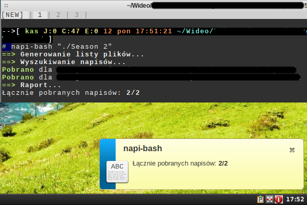

Czym jest napi-bash
Napi-bash to lekki i szybki program pobierający polskie napisy do plików filmowych. Dzięki porzuceniu zewnętrznych technologi na rzecz wbudowanych w bash 4, program jest szybki i ma małe wymagania i zależności (każdy Linux/BSD/cygwin/itd).
Lekki ale wystarczająco potężny
- Pobieranie współbieżne (zadania wykonywane współbieżnie skracają czas oczekiwania na rezultaty)
- Szybkie skanowanie wnętrz katalogów (po rozszerzeniach i rozmiarze plików)
- Dowolna głębia skanowania wnętrz katalogów (zakresy)
- Konwertowanie formatów (tak by twój odtwarzacz stacjonarny mógł odtwarzać napisy zaraz po ściągnięciu)
- Konwertowanie kodowania czcionek (niektóre napisy w sieci są zakodowane w nowocześniejszym UTF8, co oznacza że mogą nie działać na twoim urządzeniu stacjonarnym)
- Detekcja formatu (dla wybrednych odtwarzaczy, które obsługują wiele formatów)
- Notyfikacje systemowe (informacje o postępie, bez terminala)
- Zabezpieczenie przed nadpisywaniem starych plików z napisami
- Możliwość konfiguracji ww opcji i różnych innych aspektów programu za pomocą pliku konfiguracyjnego
Zrzuty ekranu

Więcej...
Przejdź na wiki projektu.